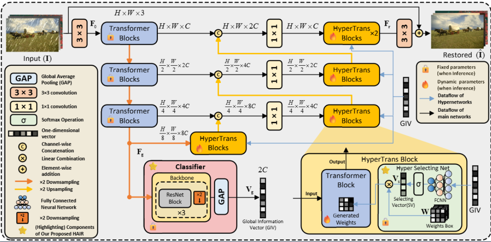
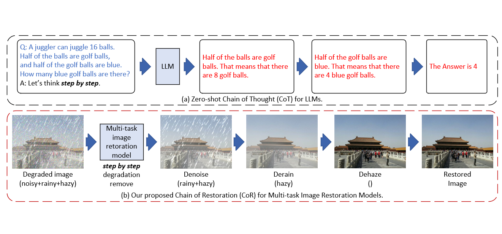
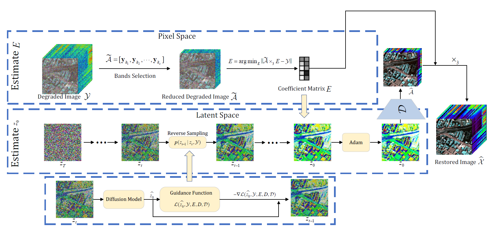

Publications 📖(* indicates equal contribution.) |

|
UniVerse: Unleashing the Scene Prior of Video Diffusion Models for Robust Radiance Field Reconstruction
Jin Cao, Hongrui Wu, Ziyong Feng, Hujun Bao, Xiaowei Zhou, Sida Peng, ICCV 2025 |
|  |
HAIR:Hypernetworks-based All-in-One Image Restoration
Jin Cao, Yi Cao, Li Pang, Deyu Meng, Xiangyong Cao, Arxiv 2024, preprint [Paper] [Code] 
|
|  |
Chain-of-Restoration: Multi-Task Image Restoration Models are Zero-Shot Step-by-Step Universal Image Restorers
Jin Cao, Deyu Meng, Xiangyong Cao, Arxiv 2024, preprint [Paper] [Code] 
|
|  |
LatentHSI: Restore Hyperspectral Images in a Latent Space
Jin Cao* Xiangyu Rui*, Li Pang, Deyu Meng, Xiangyong Cao, Information Fusion 2024, (IF=18.6) [Paper] |